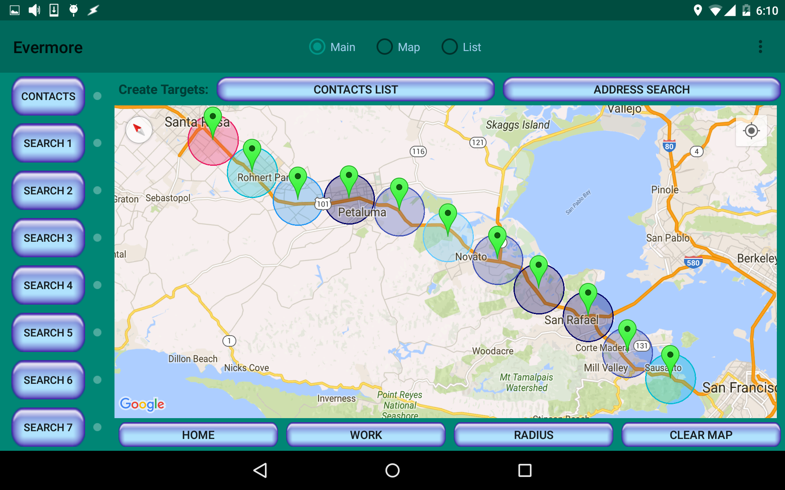

Drop a series of Targets along the route.
The radius is adjustable in the overflow menu (the three dots in the upper right corner) under Settings.
The radius is adjustable in the overflow menu (the three dots in the upper right corner) under Settings.